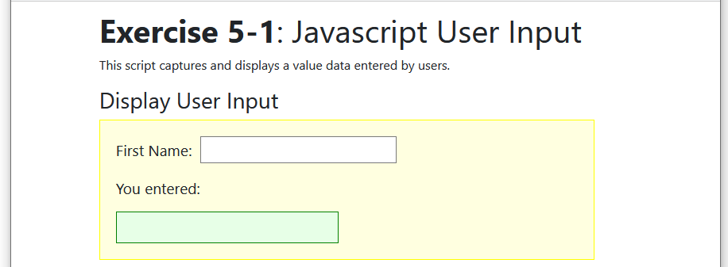
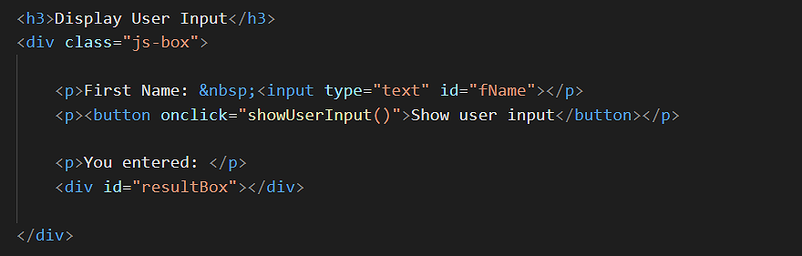
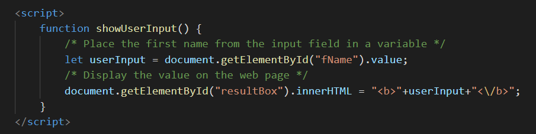
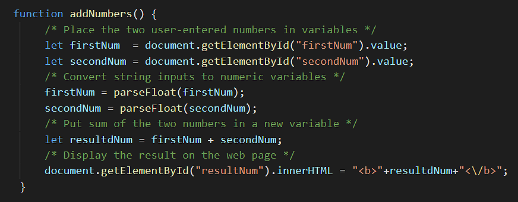

In this Tutorial you will learn how to:
In this Tutorial you will work with the following web page:
Follow these steps to download the exercise files for this JavaScript Tutorial:
Your exercise file are now ready for you to work with.
In previous Tutorials you learnt how to assign values to string and numeric variables with JavaScript statements such as the following.
var username ="Pamela"; var profit = 12000;
In the above examples the values were assigned to the variables by you, the creator of the web page.
The real usefulness of JavaScript, however, is its ability to capture and manipulate values entered by the visitor to a web page.
The most common way to capture user-entered values on a web page is with a HTML input box.
The type of text means that the field can be used to capture any keyboard characters, such as letters, numbers, spaces or currency symbols.
Capturing information from a web page visitor is just the first step of a two-step process.
The second is assigning the entered value to a variable in JavsScript code. To do that, you need to give a unique id to the input field. In the example, above, the id is fName for 'First Name'.
In JavaScript, you can then create a new variable such as userInput, and use the getElementById() method to assign the entered value to the variable as follows:
let userInput;
userInput = document.getElementById("fName").value;
Or, on a single line:
let userInput = document.getElementById("fName").value;
You can see that the above two statements follow an important rule governing all use of the assignment operator (=):
The variable goes on the left hand side (LHS), and the value for assignment to the variable goes on the right hand side (RHS).
Exercise 5.1 takes you through the steps of assigning a user-entered value to a variable, and then displaying that value on the web page.
In your websites/js-exercises/user-input sub-folder, open the following file in VS Code and your web browser:
It should look as shown below.
In the HTML, you can see:
In VS Code, scroll down to the bottom of the web page, to just before the closing /body tag, and enter the following function inside a pair of script of tags.
<script>
function showUserInput() {
/* Place the value from the input field in a variable */
/* Display the value on web page */
}
</script>
At the moment, your new function contains only two comment lines.
Scroll back up to the input box and, just under it, enter this new line with a button and an event handler.
<p><button onclick="showUserInput()">Show user input</button></p>
Your HTML now looks as follows.
The event handler links the button with the function at the bottom of the web page.
Scroll back down to the function. Under the first comment line, enter the following:
let userInput = document.getElementById("fName").value;
This places the value, entered by the user in the input field with an id of fname, in a variable named userInput.
Next, under the second comment line, enter the following:
document.getElementById("resultBox").innerHTML = "<b>"+userInput+"<\/b>";
This updates the content of the div element with an id of resultBox with whatever value is in the userInput variable.
Your JavaScript code now look as shown below.
Save your web page and reload your web browser.
Test that your code works by entering some text in the input field and clicking the 'Show user input' button'.
You can close the exercise-5.1.html file when finished.
Exercise 5.2 takes you through the steps of assigning a user-entered value to a variable, and then displaying that value on the web page.
A 'Reset' or 'Clear' button enables user to remove a value they may have entered to the input field. Let's add one to the web page you have worked on in the previous exercise.
In VS Code and your web browser, open the following file.
As you can see, it is just a finished version of exercise-5.1.html.
In the HTML, replace the line that contains the 'Show user input' button and event handler with the following.
<p><button onclick="showUserInput()">Show user input</button> <button onclick="resetAll()">Reset All</button></p>
Scroll down to the bottom of the web page and enter this new function under the 'showUserInput()' function.
function resetAll() {
document.getElementById("fName").value = "";
document.getElementById("resultBox").innerHTML = "";
}
This function resets input field and display div by entering a value of 'nothing' to each one.
Save your web page and reload your web browser.
Verify that the 'Reset All' button works.
You can close the exercise-5-2.html file when finished.
It is not only strings such as names of email addresses that you will want to capture in HTML forms. You will also want to capture order quantities, financial amounts and other numbers.
Because an HTML text box regards everything entered to it as a string, you need to convert string variables containing numbers to actual numeric variables before using the user-entered values in calculations.
Exercise 5.3 helps you understand why you need to do this type conversion.
In VS Code and your web browser, open the following file.
In the HTML you can see two input fields, two buttons and a single two div box for displaying the sum of the two numbers.
Scroll down to the JavaScript code at the bottom.
In the 'addNumbers' function, under the '/* Put sum of the two numbers in a new variable */' comment line, enter the following:
let resultdNum = firstNum + secondNum;
Next, under the '/* Display the result on the web page */' comment line, enter the following:
document.getElementById("resultNum").innerHTML = "<b>"+resultdNum+"<\/b>";
Save your file and reload it in your web browser.
Test yout code as follows:
The result you see is probably not the answer you want.
JavaScript offers two methods for converting string variables to numeric variables.
Method |
Description |
parseInt() |
Converts string variable to a numeric variable. The result is an integer (whole number). Anything after the decimal point is discarded. myVar = parseInt(myVar); |
parseFloat() |
Converts string variable to a numeric variable. The result is a floating point number. Anything after the decimal point is preserved. myVar = parseFloat(myVar); |
Neither method checks whether the variable actually contains a number or not. Even if the variable contains a string, each method still attempt to perform the variable type conversion.
In your JavaScript code, add the following new lines to the 'addNumbers()' function, just after the second variable assignment:
/* Convert string inputs to numeric variables */ firstNum = parseFloat(firstNum); secondNum = parseFloat(secondNum);
Your complete code should now look as follows.
Save your web page and reload your web browser.
Verify that the code now adds the two numbers correctly.
You can close the exercise-5-3.html file when finished.
When displaying financial amounts on screen it is conventional to format them so that they have a fixed number of decimal places. Values such as 12.80 and 45.00 look much better than 12.8 and 45. JavaScript provides a toFixed() method for this purpose. You enter the number of decimal places you require in the method's parenthesis. It works only with numeric variables.
If the variable named 'myNum' contains 123.5, for example, the following statement reformats the value in the variable to 123.50.
myNum = myNum.toFixed(2);